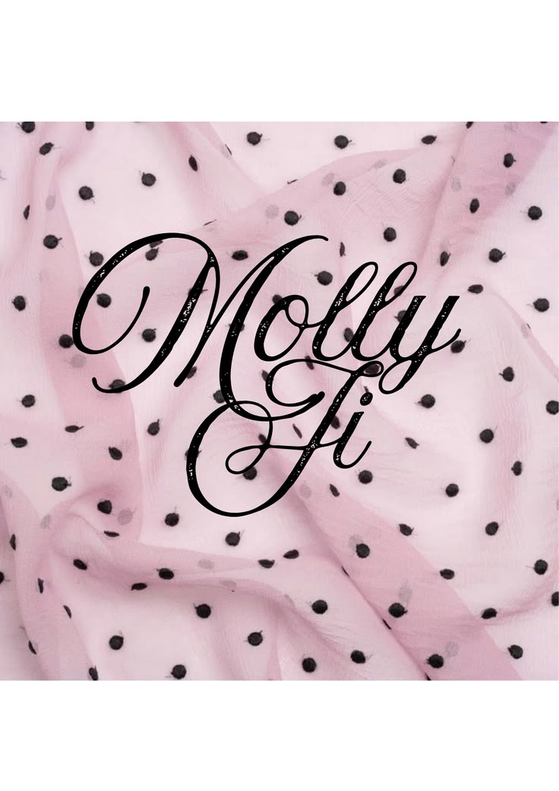
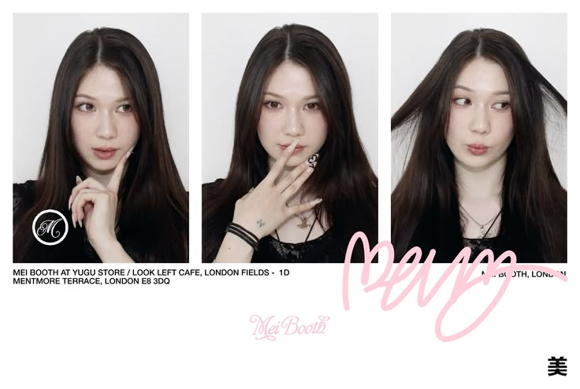
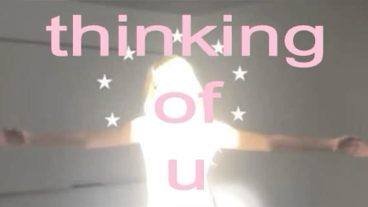

Lokal synlighet för ett kafé
Kursuppgift: plan för Google-profil och sökord för ett fiktivt kafé i Göteborg.
22år gammal student baserad i Göteborg, Sverige.
Mål om att bli kreativ strateg och att ena människa med konstens olika former och att driva företag.
CV och länkar

Jag är en student på IHM Business School och studerar digital marknadsföringsspecialist med mål om att en dag arbeta som strateg utrikes med nya kulturer, i nya länder och med nya människor! Tills dess arbetar jag ständigt på att bli så teknisk och kunnig inom områden som SEO och SEM, marknadsföring i den större bilden och att använda det till min nytta.
Utanför utbildningen reser jag då tiden finns till och plockar alltid upp på nya saker som stil, marknadsföring och trender jag inte annars stöter på.
Jag brinner för att få folk att känna sig enade med konst och älskar att skapa moodboards.
Erfaren och aktiv på sociala platformar.

Skapar anslagstavlor på pinterest och letar stiler och märken baserat på dem.
Kursuppgift: plan för Google-profil och sökord för ett fiktivt kafé i Göteborg.
Kursuppgift: pelare, kanaler och tolv inlägg för en hållbar kaffeprenumeration.
Handkodad med HTML, CSS och JavaScript, med AI som kodstöd.
Fortfarande nyfiken om vem jag är? Mejla mig eller hör av dig på LinkedIn.